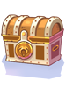
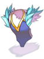

Prize of Hero
|  | Prize of Hero is an MVP drop from the final bosses of Morse's Cave and Bios Island.
It contains items known as Heroic Equipment, each specifically usable by a certain class. |
Contents
The equipment listed below are attainable only through opening Prizes of Hero. They all require Base Level 160 to be worn, and each of the armor pieces are exclusive to their respective classes. The footgear items are wearable by all classes.
| Image | Name | Type | Description |
|---|---|---|---|
| Hero Plate [1] | Armor | MDEF +5, Max HP/SP +5%.
ATK +10, MATK +10, HIT +10, FLEE +10. Increases Banishing Point, and Storm Blast damage by +10%. Has a 3% chance per refine rate to autocast Level 10 Heal, or Level 10 Storm Gust when dealing physical damage.
Defense : 120 Weight : 400 Required Level : 160 Usable Jobs : Rune Knight, Royal Guard | |
| Hero Judgement Shawl [1] | Armor | Max HP/SP +5%.
ATK +10, MATK +10, HIT +10, FLEE +10. Increases Dragon Combo, Sky Net Blow, and Earth Shaker damage by +10%. Increases Judex, and Adoramus damage by +10%. Has a 6% chance per refine rate to autocast Level 1 Lex Aeterna when dealing magical attacks. Has a 3% chance per refine rate to autocast Level 10 Kyrie Eleison when dealing physical attacks.
Defense : 77 Weight : 50 Required Level : 160 Usable Jobs : Arch Bishop, Sura | |
| Hero Magic Coat [1] | Armor | Max HP/SP +5%.
MATK +10, Flee +10. Increases Crimson Rock, and Psychic Wave damage by +10%. MDEF +1 per 2 refine rate. If refine rate is odd, casting can not be interrupted, and increase your Variable Cast Time by +20%. If refine rate is even, reduce Variable Cast Time by -1% per refine rate.
Defense : 50 Weight : 80 Required Level : 160 Usable Jobs : Warlock, Sorcerer | |
| Hero Target Suit [1] | Armor | Max HP/SP +5%.
All Stats +1, Ranged damage +3%, ASPD +1. Has a 3% chance per refine rate to autocast Level 10 Attention Concentrate, and Level 10 Double Strafe when dealing physical damage.
Defense : 60 Weight : 20 Required Level : 160 Usable Jobs : Ranger, Minstrel, Wanderer | |
| Hero Hidden Cloth [1] | Armor | Max HP/SP +5%.
Increases Fatal Menace, and Triangle Shot damage by +10%. Increases Cross Impact, and Cross Ripper Slasher damage by +10%. Has a 1% chance (+3% per refine rate), to add CRIT +20, FLEE +20, ATK +10%, MATK +10%, for 10 seconds when dealing physical damage.
Defense : 70 Weight : 20 Required Level : 160 Usable Jobs : Guillotine Cross, Shadow Chaser | |
|  | Hero Trade Mail [1] | Armor | MDEF +5. Max HP/SP +5%.
ATK +10, MATK +10. If Base STR is 90 or higher, STR +1 for every 2 refines. If Base INT is 90 or higher, INT +1 for every 2 refines. If Base VIT is 90 or higher, VIT +1 for every 2 refines. If Base AGI is 90 or higher, AGI +1 for every 2 refines. If Base DEX is 90 or higher, DEX +1 for every 2 refines. If Base LUK is 90 or higher, LUK +1 for every 2 refines. Has a 3% chance per refine to autocast Stun, Poison, Silence, or Curse on the enemy when dealing melee physical attacks.
Defense : 100 Weight : 50 Required Level : 160 Usable Jobs : Genetic, Mechanic |
| Hero Nepenthes Shoes [1] | Footgear | Reduces Variable Cast Time by -10%.
If refine rate is +8 or higher, reduce Variable Cast Time by -5%. For every refine rate +9 and higher, reduce Variable Cast time by an additional -1%. If refine rate is +11 or higher, reduce Variable Cast Time by -3%. For every refine rate +12 and higher, reduce Variable Cast Time by an additional -3% (up to +13).
Defense : 10 Weight : 30 Required Level : 160 Usable Jobs : Every Job | |
| Hero Silverleather Boots [1] | Footgear | Ranged Damage +5%.
For every refine rate +8 or higher, Ranged Damage +1% (up to +13).
Defense : 15 Weight : 30 Required Level : 160 Usable Jobs : Every Job | |
| Hero Ungoliant Boots [1] | Footgear | SP Consumption -5%.
For every refine rate +8 or higher, SP Consumption -1% (up to +13).
Defense : 10 Weight : 30 Required Level : 160 Usable Jobs : Every Job |